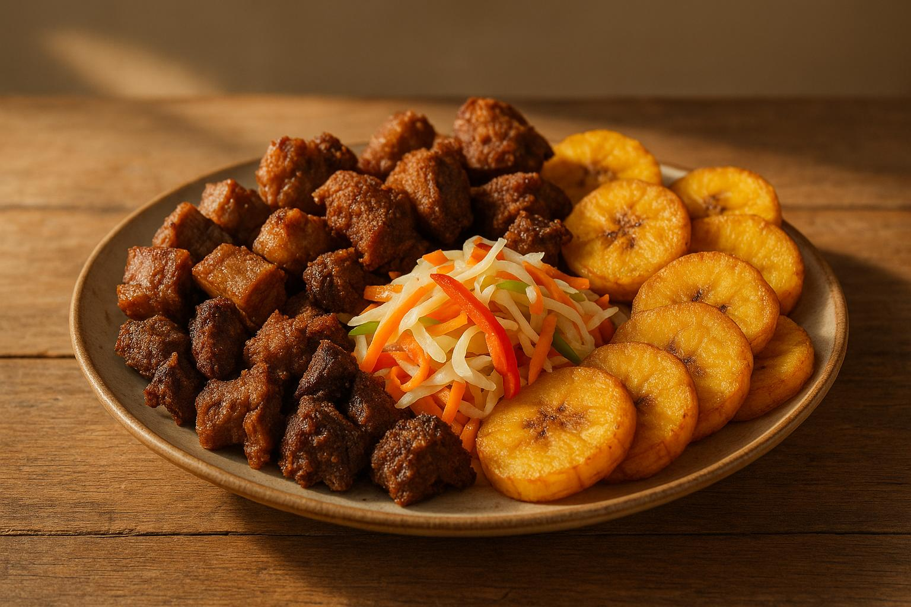

La Haitian Cuisine is a vibrant eatery located in the heart of Brooklyn, NY, specializing in authentic Haitian cuisine. Our menu features a variety of traditional dishes made with fresh ingredients and bold flavors that reflect the rich culinary heritage of Haiti. From savory griot to flavorful diri ak pwa, we offer a taste of Haiti in every bite. Our warm and welcoming atmosphere makes us the perfect spot for family gatherings, casual dining, or special occasions. Come experience the unique flavors and hospitality that La Haitian Cuisine has to offer!
